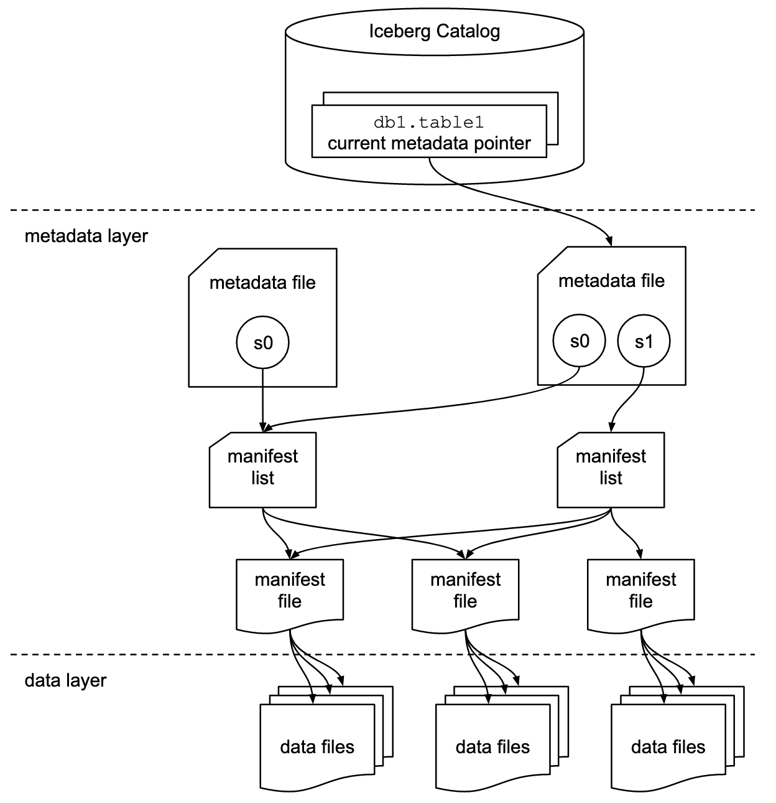
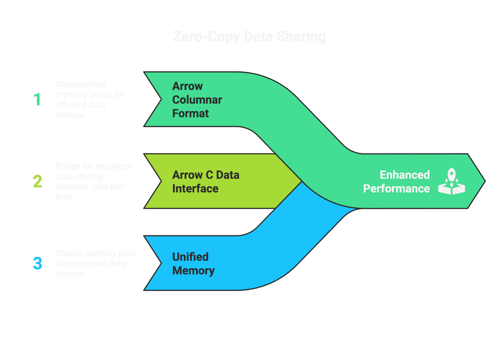
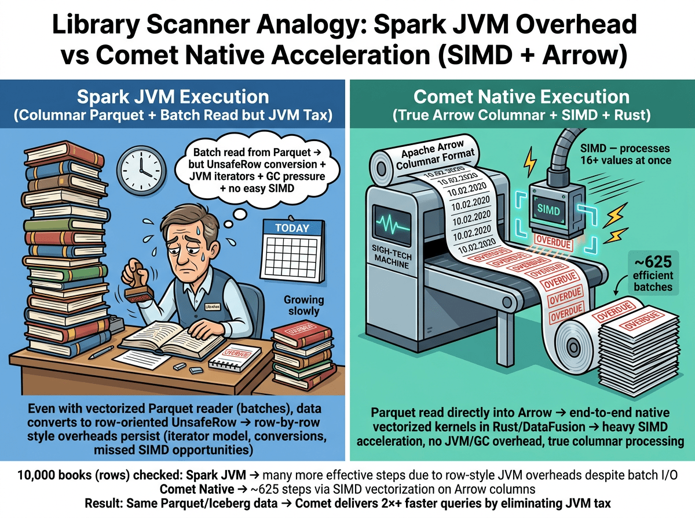
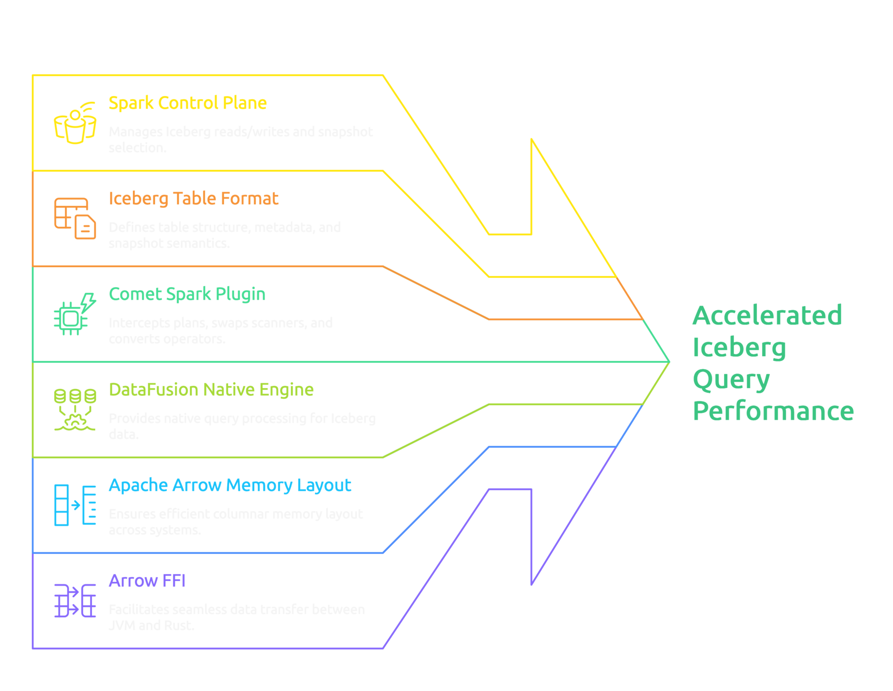
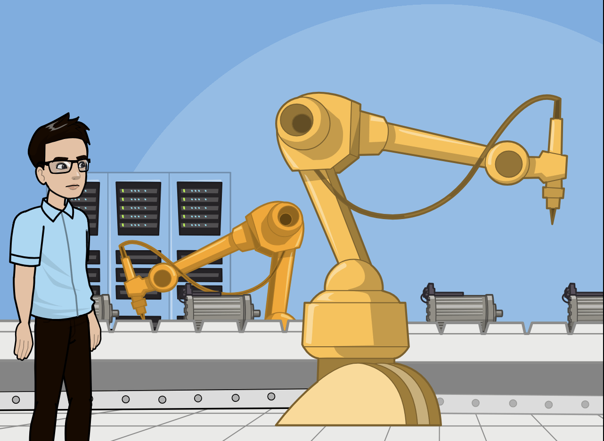
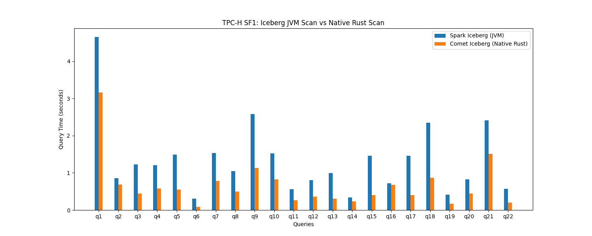

Datafusion-comet
Iceberg-rust
Kubeflow
GSoC Student Developer
GSoC Mentor
Spark Iceberg Pipeline
HashAggregateExec(sum(amount)) (Operator 3)
│
FilterExec(amount > 1000) ← post scan (Operator 2)
│
BatchScanExec(Iceberg) ← date, amount (Operator 1)
pushed: [date = '2024-01-15', amount > 1000]
Aggregate [sum(amount)]
└─ Filter [date = '2024-01-15' AND amount > 1000]
└─ Relation [iceberg.db.orders]Scans touch everything:
Iceberg Parquet Table
A native execution path where Arrow is the memory contract, DataFusion is the engine, and Comet is the bridge.

Arrow FFI lets us move compute across runtime boundaries without moving data.
Net effect:
• Parallelism across files / row groups (I/O concurrency).
• Parallelism within a core via SIMD (many values per instruction).


Spark SQL Parser → Analyzer → Optimizer
│ (identical to JVM flow above)
▼
Spark Planner
│ produces the SAME initial physical plan:
│ HashAggregate → Exchange → HashAggregate → Filter → BatchScanExec
▼
CometScanRule.apply() ← COMET INTERCEPTS HERE
│ pattern-matches BatchScanExec
│ detects SupportsComet (Iceberg scan)
│ checks: is COMET_ICEBERG_NATIVE_ENABLED?
│ serializes FileScanTasks → protobuf IcebergScan
│ replaces BatchScanExec → CometIcebergNativeScanExec
▼
CometExecRule.apply() ← COMET REPLACES OPERATORS
│ walks the physical plan bottom-up:
│
│ BatchScanExec → CometIcebergNativeScanExec (iceberg-rust: File IO, expr pushdown,
schema handling & evolution, MoR)
│ FilterExec → CometFilterExec
│ HashAggregateExec → CometHashAggregateExec
│ ShuffleExchangeExec → CometShuffleExchangeExec
│ HashAggregateExec → CometHashAggregateExec
▼
Final Physical Plan:
== Physical Plan ==
CometHashAggregate(keys=[], functions=[sum(amount)]) ← native
└─ CometShuffleExchangeExec SinglePartition ← native shuffle
└─ CometHashAggregate(keys=[], functions=[partial_sum]) ← native
└─ CometFilter [amount > 1000] ← native
└─ CometIcebergNativeScanExec [date, amount] ← native
pushed: [date = '2024-01-15']Native Shuffle
Shuffle blocks (JVM) → raw bytes via JNI → native IPC decode (read_ipc_compressed) → native operator
MoR, predicate pushdown, column prunings
Discussions and References
apache/datafusion-comet:
Future of Iceberg Support in Comet #2921
Iceberg v3 Support #3376
Iceberg Table Maintenance: Acceleration Opportunities #3371
[EPIC] Iceberg Feature Matrix: Spark-Iceberg vs iceberg-rust vs datafusion-comet #3756
apache/iceberg-rust: [EPIC] Implement Missing Write Actions #2269

Spark Iceberg continues to own planning, while DataFusion Comet owns scanning and compute. This gives us mature semantics plus native performance.
Arrow FFI means the same columnar buffers produced by iceberg-rust and DataFusion can be handed directly into Spark with zero copy, maintaining a single in-memory truth.
Java implementation as the source of truth for Iceberg table semantics-snapshots, deletes, commits-while offloading the hot path (Parquet decode, row-level delete application, and columnar compute) into native Rust, where DataFusion can run SIMD-vectorized kernels and fully exploit CPU caches and hardware features.
What if running in GPUs / TPUs ?
~Zero shuffling in Spark execution ?
Why not by default leverage Vectorization?
JNI and Arrow FFI
Environment: macOS (Apple Silicon), Spark 3.5.8, local[*], TPC-H SF1, Iceberg tables, single iteration
export COMET_JAR=~/Documents/apache/datafusion-comet/spark/target/comet-spark-spark3.5_2.12-0.15.0-SNAPSHOT.jar
export ICEBERG_JAR=/tmp/comet-bench/jars/iceberg-spark-runtime-3.5_2.12-1.8.1.jar
SPARK_LOCAL_IP=127.0.0.1 $SPARK_HOME/bin/spark-submit \
--master "local[*]" \
--driver-class-path "$COMET_JAR:$ICEBERG_JAR" \
--jars "$COMET_JAR,$ICEBERG_JAR" \
--conf "spark.plugins=org.apache.spark.CometPlugin" \
--conf "spark.comet.enabled=true" \
--conf "spark.comet.exec.enabled=true" \
--conf "spark.comet.scan.icebergNative.enabled=true" \
--conf "spark.shuffle.manager=org.apache.spark.sql.comet.execution.shuffle.CometShuffleManager" \
--conf "spark.sql.catalog.local=org.apache.iceberg.spark.SparkCatalog" \
--conf "spark.sql.catalog.local.type=hadoop" \
--conf "spark.sql.catalog.local.warehouse=/tmp/comet-bench/iceberg-warehouse" \
--conf "spark.sql.defaultCatalog=local" \
benchmarks/tpc/tpcbench.py \
--benchmark tpch --catalog local --database tpch \
--iterations 1 --output /tmp/comet-bench/results --name comet-iceberg
Spark JVM plan: BatchScan → Filter → Project → HashAggregate → Exchange → HashAggregate
Comet Native plan: CometIcebergNativeScan → CometFilter → CometProject → CometHashAggregate → CometExchange → CometHashAggregate
Every operator is native — scan through iceberg-rust, filter/agg/shuffle through DataFusion.
No JVM data processing in the hot path.
Why Comet wins
|
Scan + Filter (Q6) |
SIMD + vectorized Arrow scan + reduced JVM overhead → 3.6x |
|
Join‑heavy (Q5, Q9, Q18) |
Native scan + native shuffle + vectorized hash join |
|
Aggregation heavy (Q1, Q18) |
Columnar aggregation in Rust |
|
Subqueries (Q4, Q21) |
Still benefits from scan acceleration, though control‑flow limits speedup |
|
Distinct / NOT IN (Q16) |
Lower speedup (1.1x) due to set‑based operations + less scan dominance |
| Query | JVM (s) | Comet (s) | Speedup | Why it improves |
| Q4 | 4.52 | 1.74 | 2.6x | Multi‑table joins + aggregations; native scan + vectorized hash aggregation reduce JVM overhead. |
| Q11 | 3.02 | 0.79 | 3.8x | Heavy aggregations and filters; SIMD + columnar execution drive big gains. |
| Q15 | 0.38 | 0.12 | 3.2x | Small but scan‑dominated query; native scan + filter path is much faster. |
| Q19 | 0.64 | 0.16 | 4.0x | Filter‑heavy path with simple projections; best case for SIMD scan + predicate pushdown. |
Thank you!
Start accelerating Iceberg queries today.
What if running in GPUs / TPUs ?
~Zero shuffling in Spark execution ?
~Zero shuffling in Spark execution ?
Arrow Flight Shuffle for Comet #3596
Apache Gluten, Velox, RAPIDS
JNI call ?
Spark (JVM) DataFusion (Rust)
─────────── ─────────────────
"I have a query plan" ──► "I'll execute it natively"
JNI
"Give me results" ◄── "Here are Arrow pointers"
Protobuf:language both sides speak to describe query plan.FFI ?
JNI call ?
FFI (Arrow C Data Interface / Foreign Function Interface):
Shared memory layout between languages
Pointer to the result (zero-copy)Default Vectorization ON
Memory model, APIs row based, JIT compiler, GC pause
Java/Spark:
.java → javac → bytecode → JVM interprets → JIT compiles → machine code
(at runtime, after warm-up)
Rust/Comet:
.rs → rustc → LLVM IR → LLVM optimizes → machine code → libcomet.so
(at build time, with SIMD)
libcomet.so = machine code (AOT, LLVM-optimized, SIMD baked in)
.class files = bytecode (needs JVM to run, JIT compiles later)Query JVM (s) Native Rust (s) Speedup Category
Q1 4.65 3.17 1.5x Scan + Aggregation (8 aggs on lineitem)
Q2 0.85 0.69 1.2x Multi-table join (8 tables)
Q3 1.23 0.45 2.8x Join + Sort
Q4 1.20 0.58 2.1x Correlated subquery
Q5 1.50 0.55 2.7x 6-table join + aggregation
Q6 0.31 0.09 3.6x Pure scan + filter (best SIMD case)
Q7 1.53 0.78 2.0x Multi-nation join
Q8 1.05 0.49 2.1x 8-table join
Q9 2.58 1.13 2.3x Complex join + subquery
Q10 1.52 0.82 1.9x Join + filter
Q11 0.56 0.27 2.1x Having clause
Q12 0.81 0.36 2.2x Case expressions
Q13 0.99 0.30 3.3x Left outer join + group by
Q14 0.34 0.23 1.5x Simple ratio
Q15 1.46 0.40 3.6x Temp view + max subquery
Q16 0.72 0.68 1.1x Distinct + NOT IN
Q17 1.46 0.41 3.6x Correlated subquery + avg
Q18 2.35 0.86 2.7x Large order aggregation
Q19 0.41 0.17 2.4x OR predicate
Q20 0.83 0.45 1.9x Semi-join
Q21 2.41 1.51 1.6x EXISTS + NOT EXISTS
Q22 0.57 0.20 2.9x Substring + not exists
Total 29.33 14.56 2.0x